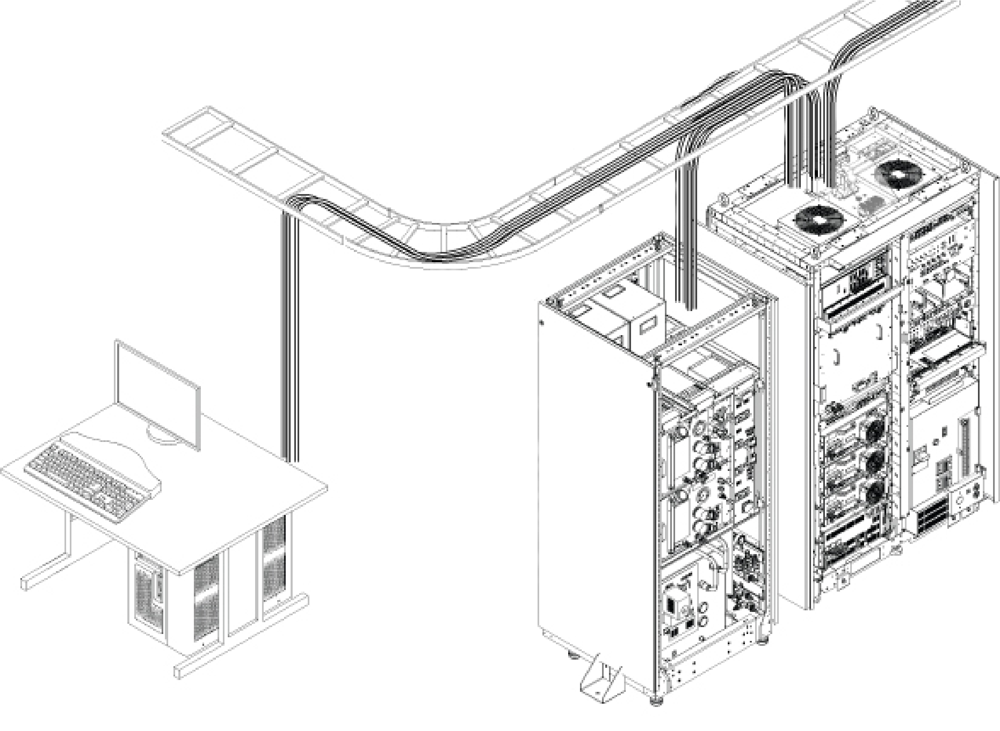
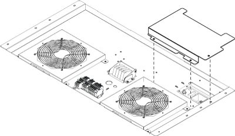
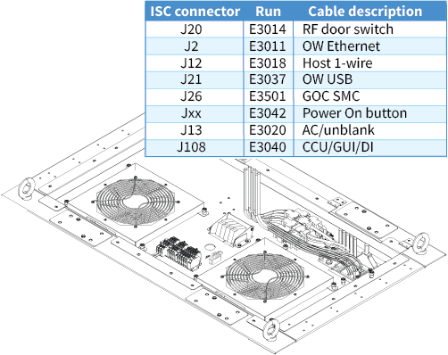
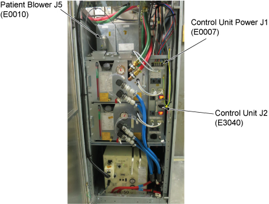
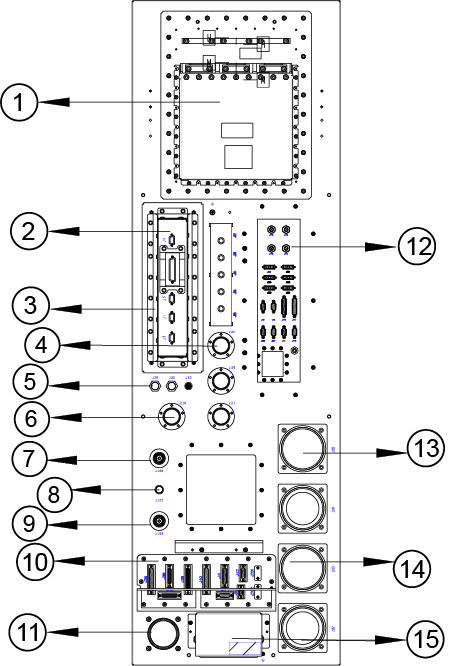
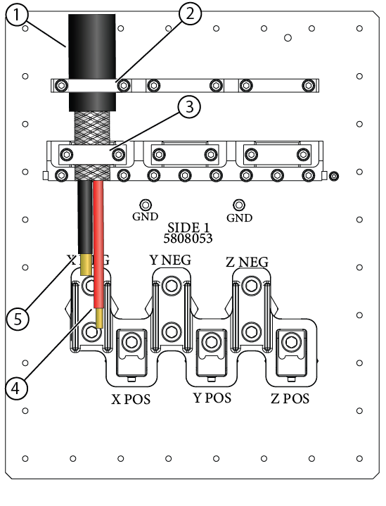
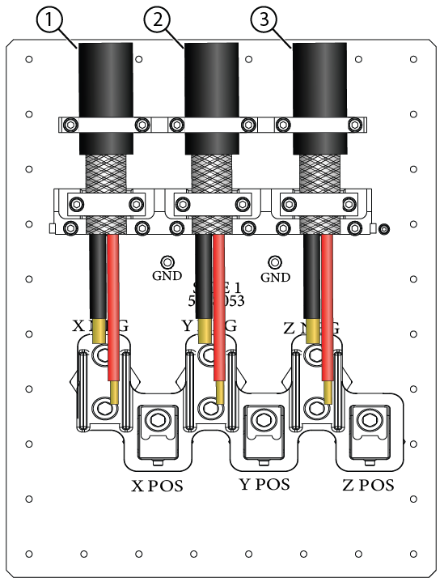
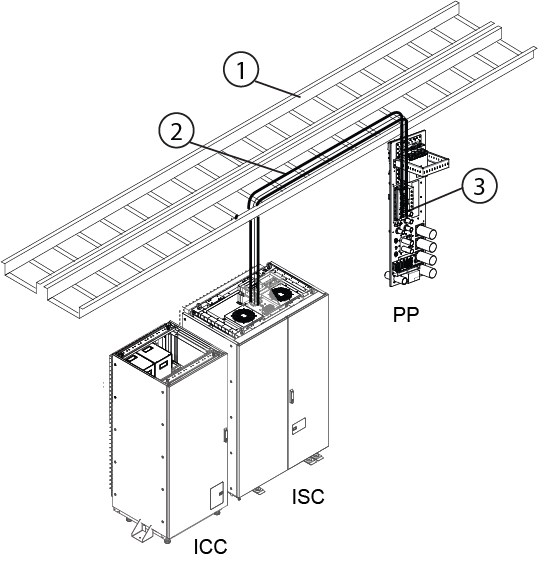

Integrated System Cabinet (ISC) cable installation (equipment room)
Procedure
Make sure signal cables are routed to the ISC top area.
Note Signal cables are routed in the power/ground line connection procedure. Please check if the cables are routed correctly. Note that the E0003 cable has already been connected.
Figure 1. Cable routing in equipment room and operator room

Cables from GOC to ISC/ICC for standard (on the wall) siting configuration
E5001 harness (to ISC cabinet IF)
E0003 (to ISC J2 terminal)
E5002 harness (to ICC PW)
E3503 (to ICC PW J118)
Patient alert tube (through ICC PW to patient table)
Cables from GOC to ISC/ICC for remote (off the wall) siting configuration
E5001 harness (to ISC cabinet IF)
E0003 (to ISC J2 terminal)
Cables from GOC to Penetration Panel (PP) for remote (off the wall) siting configuration
E5002 harness (to PP)
E3503 (to PP J118)
Patient alert tube (through PP to patient table)
Remove the ISC signal cable cover.
Figure 2. ISC signal cable cover

Connect the signal cables to the ISC top area.
Figure 3. Signal cable connection

Install signal cable cover.
Clamp and route signal cables to cable clamps of rear duct.
Note Clamp signal cable to rear duct first, then clamp and route power cable.
Make sure signal cables are routed to the ICC top area.
Connect ICC cables as below.
Figure 5. ICC cables

(For standard (on the wall) siting configuration) Go to scan room and connect the signal cables to the ICC PW.
Topic ID: task_z4g_szz_rqb
Penetration panel cable installation for remote (off the wall) siting configuration (equipment room)
About this task
Figure 6. Penetration Panel Equipment Room Side

Item
Description
1
Gradient filter
2
Power cable connector
3
TRDD filter
4
Wave guide for water hose
5
BNC for clock, loopback
6
Wave guide for helium line
7
Body connection
8
Head connection
9
Body connection
10
PHPS connector panel
11
Wave guide for fiber cable
12
DB/BNC filter
13
Patient air
14
Body coil air
15
Coldhead EMI Filter
Note The Equipment room Gradient cables, Runs E3317, E3318 and E3319 are delivered with terminals already crimped and installed and MUST NOT BE CUT TO LENGTH.
Figure 7. GEN2 Gradient filter, equipment room side

Item
Description
1
Outer insulation
2
Upper clamp
3
Lower clamp
4
Positive wire
5
Negative wire
Procedure
Installing gradient cables to the Gen2 gradient filter - equipment room
Position the gradient cables on the corresponding clamps on the gradient filter. The black insulation should be under the top clamp, braid under the bottom clamp. Loosely secure the cables with the clamps.
Figure 8. Installing gradient cables to the Gen2 gradient filter - equipment room

Item
Description
1
Run E3317 = FILT X, left side
2
Run E3318 = FILT Y, middle
3
Run E3319 = FILT Z, right side
Attach and secure the lugs to the corresponding posts with a screw. Torque each bolt to 45 Nm.
Tighten the upper and lower clamps until each gradient cable is secured. Do not pinch or compress the gradient cable.
Installing RF transmit cables (equipment room)
It is recommended that the RF transmit cables be routed through the overhead cable tray after the gradient cables have been routed and before any of the other cables are installed.
Note The equipment room RF transmit cables, Runs E1001 and E1051 are delivered to the site pre-terminated and MUST NOT BE CUT TO LENGTH.
Table 1. RF transmit cables - equipment room
Run #
Connect 1
Connect 2
E1002
ISC > Head Out > J122
Penetration Panel > J122
E1001
ISC > Body Out > J106
Penetration Panel > J106
E1051
ISC > Body Out > J109
Penetration Panel > J109
Figure 9. Equipment room RF cable routing

Item
Description
1
Cable tray position
2
Penetration panel end of cable tray
3
Connect RF transmit cables
Make sure all non-magnetic tools, ropes, and/or ladders that may be required for routing of cables are assembled and ready for use.
Starting at the Penetration Wall (PW) end of the cable tray, route the head E1002 and body cables E1001 and E1051 marked for connection to the ISC through the designated overhead cable tray towards the ISC.
Coil and store excess cable length in the overhead cable tray.
Routing and connecting control room data cables to the Penetration Panel (Equipment Room):
Refer to cable locations in the equipment room overhead cable trays for positioning of cables and hoses routed in equipment room in the overhead cable routing mechanisms. Make sure cables are located in their designated areas.